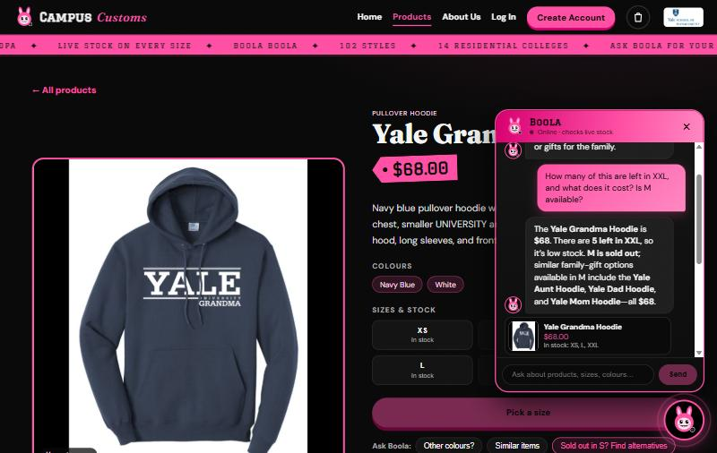
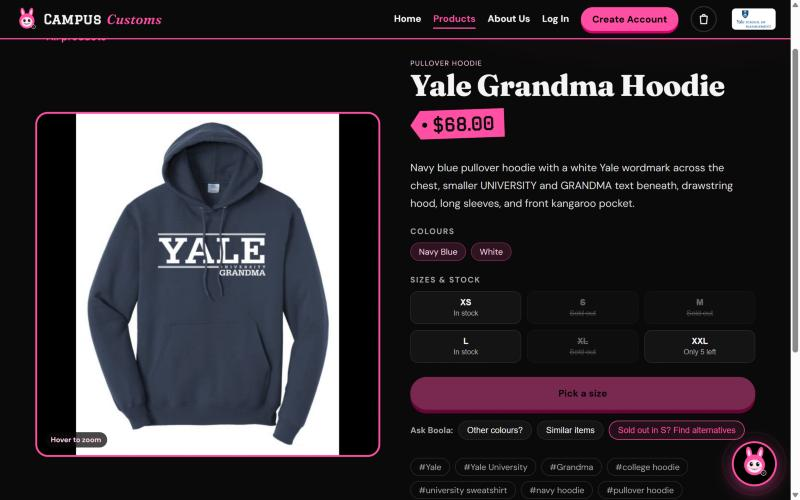
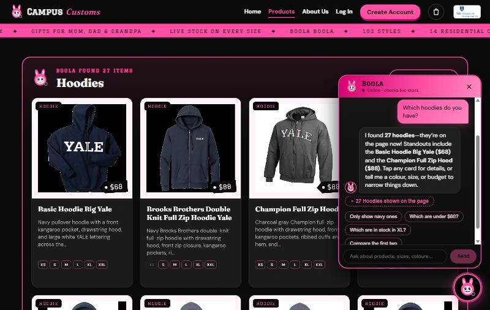
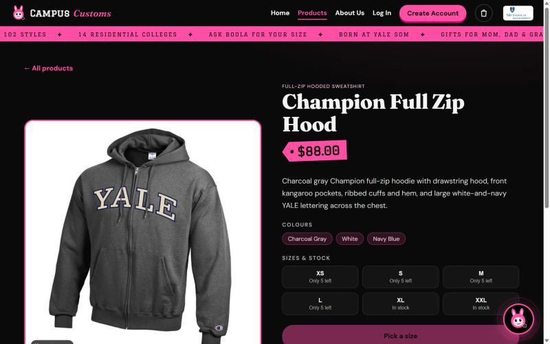
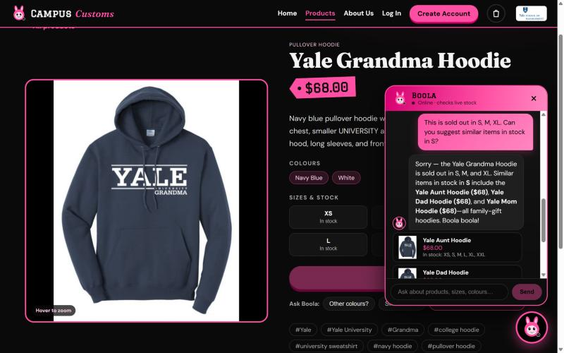
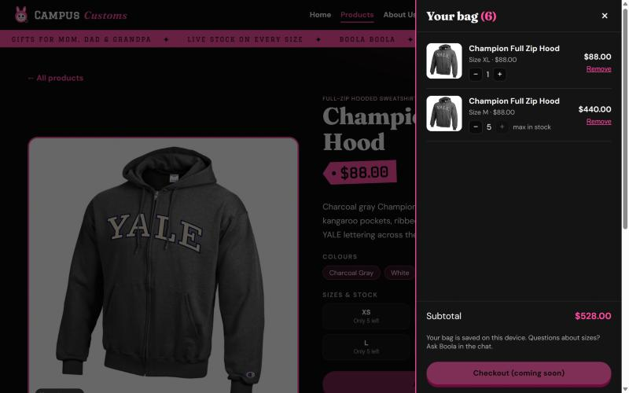

| # | Check | Result |
|---|---|---|
| 1 | Chat checks an item's inventory level and price, honestly, from the database | PASS |
| 2 | A category question ("hoodies") makes dynamic product cards appear on the page, and they open the detail page | PASS |
| 3 | Problem 9 usability features: sold-out "Find alternatives" chip + alternatives tool (bonus: shopping bag) | PASS |
1 Chat checks inventory level (honest stock and price)
On the Yale Grandma Hoodie product page (as a guest) I asked the chat: "How many of this are left in XXL, and what does it cost? Is M available?"

Database (campus_customs.db): price = 68.0 · XS 12 · S 0 · M 0 · L 20 · XL 0 · XXL 5 ✔ matches the reply

2 Dynamic search cards after a category question
Starting on the Home page, I asked the chat: "Which hoodies do you have?"

Database: 27 products whose garment_type contains "hood" ✔ (all 27 rendered as cards)

3 Usability feature from Problem 9: "Sold out? Find alternatives"
On the Yale Grandma Hoodie page, the "Ask Boola" row shows a highlighted "Sold out in S? Find alternatives" chip, visible in the check 1 screenshot above. I clicked it.

Database, size S stock: yale-aunt-hoodie 12 · yale-dad-hoodie 5 · yale-mom-hoodie 8 ✔ all genuinely in stock
